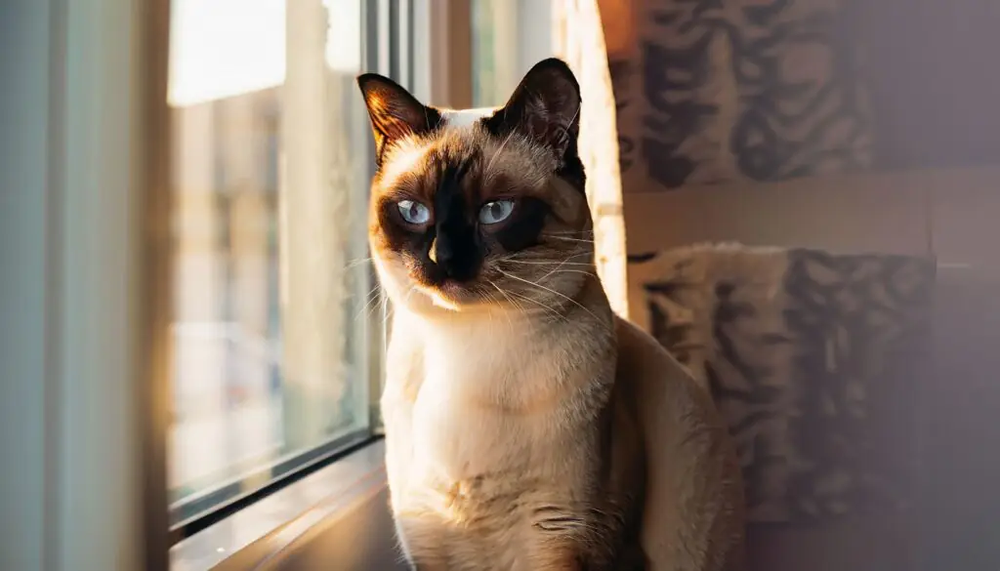
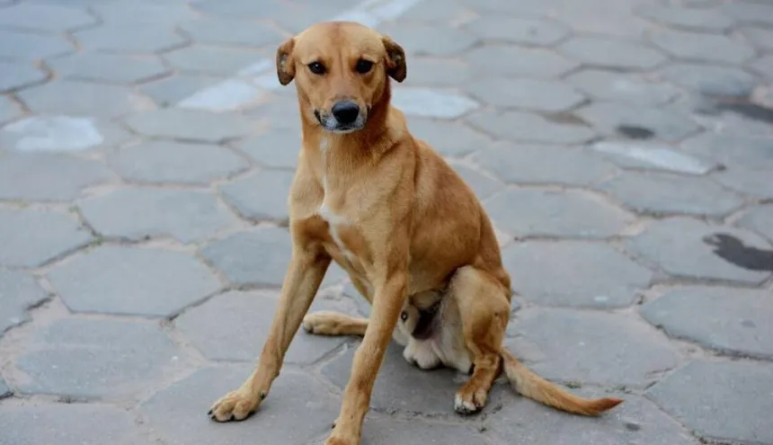
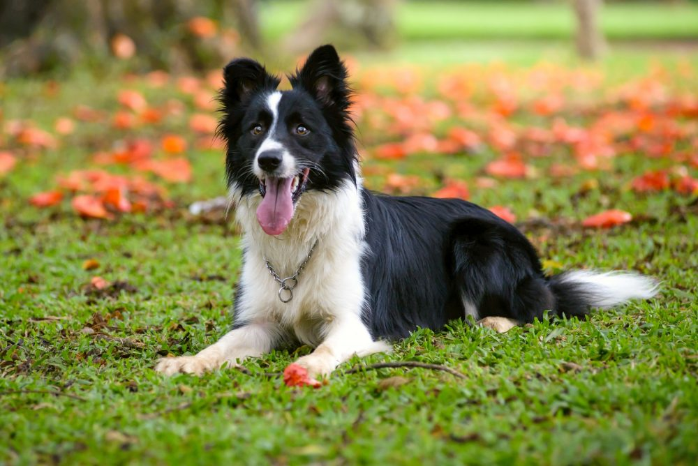
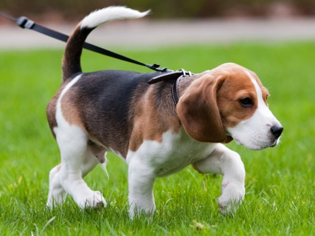

Encontrou um pet na rua e acha que alguém pode querer ajudar ou adotar? Publique a foto dela ou dele aqui!

Belinha - Gato
Rua Bélgica, 123-150Londrina, PR
Encontrado em
19/05/2024

Astolfo - Cachorro
Avenida Airton Senna, 600 - Londrina, PR
Perdido em
15/05/2024

Luna - Cachorro
Rua Michigan, 220
Londrina, PR
Encontrado em
10/06/2024

Cãnela - Cachorro
Avenida Chepli Tanus Daher - Cafezal, Londrina, PR
Perdido em
05/05/2024

Amora - Gato
Rua Goiás, 878 - Centro, Londrina, PR
Desaparecido em
09/06/2024
Abilio - Cachorro
Rua Piauí, 900 - Centro, Londrina, PR
Desaparecido em 22/05/2024